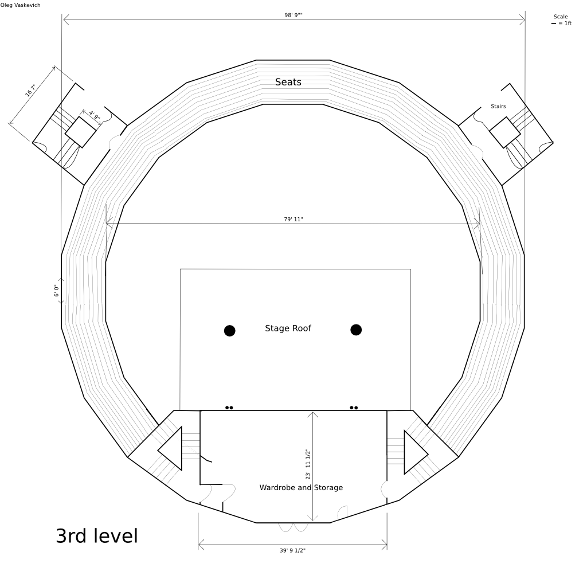
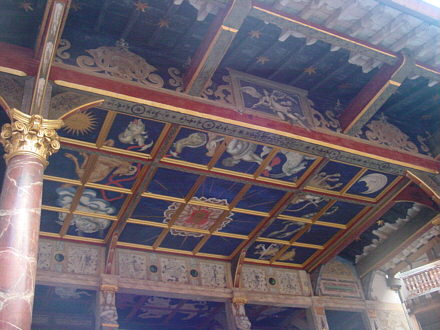

Yard Level | 2nd Level | [3rd Level]

This is where the wealthy and middle class would sit. The cost was 2 pence for the galleries, and there would be a collector with a box who stood at the stairs leading there.
This is the roof covering the stage. It was known as "The Heavens." On the inside, it had a beatiful design. It was made to protect the actors and their costumes in case of sudden rain.
View Larger Map
This is what the Globe Theater looks like from above. The flag on the towers was raised when there was a play. Different color flags meant different plays. Also, although the Globe has 20 sides now, there is not enough information to determine how many sides and how big it was during the time of Shakespeare.